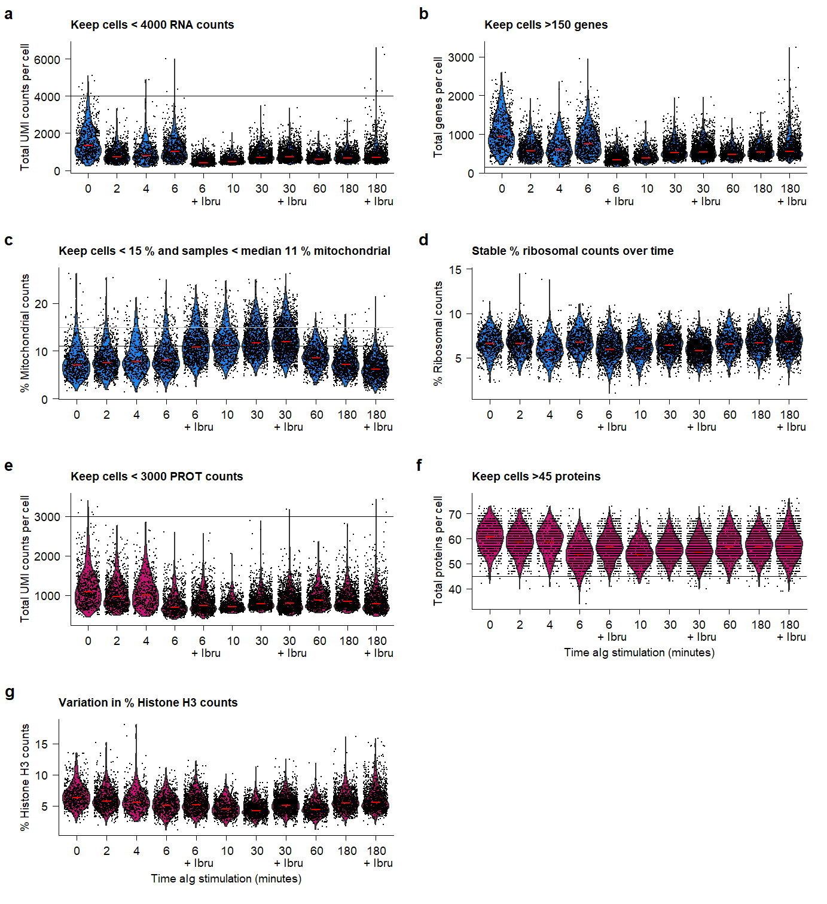

Last updated: 2021-07-08
Checks: 7 0
Knit directory: QuRIE-seq_manuscript/
This reproducible R Markdown analysis was created with workflowr (version 1.6.2). The Checks tab describes the reproducibility checks that were applied when the results were created. The Past versions tab lists the development history.
Great! Since the R Markdown file has been committed to the Git repository, you know the exact version of the code that produced these results.
Great job! The global environment was empty. Objects defined in the global environment can affect the analysis in your R Markdown file in unknown ways. For reproduciblity it’s best to always run the code in an empty environment.
The command set.seed(20201117) was run prior to running the code in the R Markdown file. Setting a seed ensures that any results that rely on randomness, e.g. subsampling or permutations, are reproducible.
Great job! Recording the operating system, R version, and package versions is critical for reproducibility.
Nice! There were no cached chunks for this analysis, so you can be confident that you successfully produced the results during this run.
Great job! Using relative paths to the files within your workflowr project makes it easier to run your code on other machines.
Great! You are using Git for version control. Tracking code development and connecting the code version to the results is critical for reproducibility.
The results in this page were generated with repository version 4f4828d. See the Past versions tab to see a history of the changes made to the R Markdown and HTML files.
Note that you need to be careful to ensure that all relevant files for the analysis have been committed to Git prior to generating the results (you can use wflow_publish or wflow_git_commit). workflowr only checks the R Markdown file, but you know if there are other scripts or data files that it depends on. Below is the status of the Git repository when the results were generated:
Ignored files:
Ignored: .Rhistory
Ignored: .Rproj.user/
Ignored: data/raw/
Ignored: output/MOFA_aIg.hdf5
Ignored: output/MOFA_ibru.hdf5
Ignored: output/data_weights_prot_fact1and3.csv
Ignored: output/metadata_Ricard.csv
Unstaged changes:
Modified: analysis/revisions.rmd
Note that any generated files, e.g. HTML, png, CSS, etc., are not included in this status report because it is ok for generated content to have uncommitted changes.
These are the previous versions of the repository in which changes were made to the R Markdown (analysis/QC.Rmd) and HTML (docs/QC.html) files. If you’ve configured a remote Git repository (see ?wflow_git_remote), click on the hyperlinks in the table below to view the files as they were in that past version.
| File | Version | Author | Date | Message |
|---|---|---|---|---|
| Rmd | 4f4828d | jessievb | 2021-07-08 | update header and small edits html output |
| html | c51a9e7 | jessievb | 2021-06-14 | Build site. |
| html | 47ecaed | Jessie van Buggenum | 2020-11-24 | Build site. |
| Rmd | 14c0ebf | Jessie van Buggenum | 2020-11-24 | small update documentation github page |
| html | eda7e93 | Jessie van Buggenum | 2020-11-24 | Build site. |
| Rmd | 0d971e2 | Jessie van Buggenum | 2020-11-24 | minor change docs |
| html | 064f105 | Jessie van Buggenum | 2020-11-20 | Build site. |
| Rmd | 420f897 | Jessie van Buggenum | 2020-11-20 | update gene treshold |
| html | 1f83dd1 | Jessie van Buggenum | 2020-11-19 | Build site. |
| Rmd | 5d80bc6 | Jessie van Buggenum | 2020-11-19 | correct tresholds manuscript |
| html | 2c3e4a1 | Jessie van Buggenum | 2020-11-18 | Build site. |
| Rmd | 67539d5 | Jessie van Buggenum | 2020-11-18 | QC - filter and normalize datasets and split to subset of data |
| html | 2ffe38d | Jessie van Buggenum | 2020-11-17 | Build site. |
| Rmd | 4487750 | Jessie van Buggenum | 2020-11-17 | basis set-up of page display |
| Rmd | d9372d1 | Jessie van Buggenum | 2020-11-17 | Publish the initial files for this website |
source("code/load_packages.R")
source("code/plot_QC_function.R") #change settings in script to get different layout per subpanel for this figure
dir.create("output/paper_figures") # location where paper figures are storedThe QuRIE-seq data contains single-cell transcriptomic and proteomic data of BJAB cells with 9 different durations of aIg stimulation, and 3 additional timepoints with ibrutinib drug inhibition. Script below extracts all metadata (sequencing sample names, adds metadata info per sample (prot or RNA library)), and reads all data tables into R. The metadata table is saved in output folder: “output/metadata.csv”
For QC and filtering, cells with matching RNA and protein information are used to create a Seurat object (settings RNA: min.cells = 100, min.features = 100; proteins added as additional modality PROT). Several QC stats are calculated, and the object is saved in: “output/seu_combined_raw.rds”
myfiles <- list.files(path="output/", pattern = ".rds$")
## only read all raw files and create raw combined table if not done yet. Speeds up generation of html file
if("seu_combined_raw.rds" %in% myfiles){seu_combined <- readRDS("output/seu_combined_raw.rds")} else {
source("code/Import_and_create_seuratObj.R")
}Seurat object:
seu_combinedAn object of class Seurat
8452 features across 7449 samples within 2 assays
Active assay: RNA (8372 features, 0 variable features)
1 other assay present: PROTTable Overview of per sample properties.
kable(seu_combined@meta.data %>%
group_by(condition) %>%
summarise(`Total number of cells` = round(n(),0),
`Median counts RNA` = round(median(nCount_RNA),0),
`Median Number genes` = round(median(nFeature_RNA),0),
`Median Mitochondrial counts (Median %)` = round(median(percent.mt),2),
`Ribosomal counts (Median %)` = round(median(percent.rb),2),
`Median counts PROT` = round(median(nCount_PROT),0),
`Number proteins` = round(median(nFeature_PROT),0)
)) %>%
kable_styling(bootstrap_options = c("striped", "hover"))| condition | Total number of cells | Median counts RNA | Median Number genes | Median Mitochondrial counts (Median %) | Ribosomal counts (Median %) | Median counts PROT | Number proteins |
|---|---|---|---|---|---|---|---|
| 000.aIg.contr | 688 | 1364 | 947 | 7.32 | 6.76 | 1108 | 61 |
| 002.aIg.contr | 958 | 772 | 585 | 7.81 | 6.83 | 984 | 59 |
| 004.aIg.contr | 545 | 829 | 619 | 8.04 | 6.06 | 1035 | 59 |
| 006.aIg.contr | 820 | 1047 | 762 | 8.37 | 6.93 | 720 | 54 |
| 006.aIg.ibr | 1148 | 459 | 354 | 11.14 | 6.10 | 756 | 57 |
| 060.aIg.contr | 879 | 636 | 489 | 8.84 | 6.71 | 891 | 57 |
| 180.aIg.contr | 1121 | 710 | 548 | 7.43 | 6.85 | 867 | 57 |
| 180.aIg.ibr | 1290 | 735 | 572 | 6.37 | 6.97 | 808 | 57 |
Table Overview of full dataset properties.
kable(seu_combined@meta.data %>%
summarise(`Number of cells` = round(n(),0),
`Median counts RNA` = round(median(nCount_RNA),0),
`Median Number genes` = round(median(nFeature_RNA),0),
`Median Mitochondrial counts (Median %)` = round(median(percent.mt),2),
`Ribosomal counts (Median %)` = round(median(percent.rb),2),
`Median counts PROT` = round(median(nCount_PROT),0),
`Number proteins` = round(median(nFeature_PROT),0)
) %>%
t()) %>%
kable_styling(bootstrap_options = c("striped", "hover"))| Number of cells | 7449.00 |
| Median counts RNA | 727.00 |
| Median Number genes | 556.00 |
| Median Mitochondrial counts (Median %) | 8.05 |
| Ribosomal counts (Median %) | 6.70 |
| Median counts PROT | 863.00 |
| Number proteins | 57.00 |
plot_RNA_nCount <- plot_QC_paper(seu_object = seu_combined,
feature = "nCount_RNA",
ytext = "Total UMI counts per cell",
xtext = "Time aIg stimulation (minutes)",
paneltitle = "Keep cells < 4000 RNA counts",
colorviolin = "dodgerblue2" ) +
geom_hline(yintercept = 4000, size = 0.3) +
theme(axis.title.x = element_blank())
plot_RNA_ngenes <- plot_QC_paper(seu_object = seu_combined,
feature = "nFeature_RNA",
ytext = "Total genes per cell",
xtext = "Time aIg stimulation (minutes)",
paneltitle = "Keep cells >150 genes",
colorviolin = "dodgerblue2" ) +
geom_hline(yintercept = 150, size = 0.3) +
theme(axis.title.x = element_blank())
plot_percent.mt <- plot_QC_paper(seu_object = seu_combined,
feature = "percent.mt",
ytext = "% Mitochondrial counts",
xtext = "Time aIg stimulation (minutes)",
paneltitle = "Keep cells < 15 % mitochondrial genecounts",
colorviolin = "dodgerblue2" ) +
geom_hline(yintercept = 15, color = "black", size = 0.3) +
theme(axis.title.x = element_blank())
plot_percent.rb <- plot_QC_paper(seu_object = seu_combined,
feature = "percent.rb",
ytext = "% Ribosomal counts",
xtext = "Time aIg stimulation (minutes)",
paneltitle = "Stable % ribosomal counts over time",
colorviolin = "dodgerblue2" ) +
theme(axis.title.x = element_blank())
plot_PROT_nCount <- plot_QC_paper(seu_object = seu_combined,
feature = "nCount_PROT",
ytext = "Total UMI counts per cell",
xtext = "Time aIg stimulation (minutes)",
paneltitle = "Keep cells < 3000 PROT counts",
colorviolin = "deeppink3" ) +
geom_hline(yintercept = 3000, size = 0.3) +
theme(axis.title.x = element_blank())
plot_PROT_nproteins <- plot_QC_paper(seu_object = seu_combined,
feature = "nFeature_PROT",
ytext = "Total proteins per cell",
xtext = "Time aIg stimulation (minutes)",
paneltitle = "Keep cells >45 proteins",
colorviolin = "deeppink3" ) +
geom_hline(yintercept = 45, size = 0.3)
plot_percent.H3 <- plot_QC_paper(seu_object = seu_combined,
feature = "percent.HisH3",
ytext = "% Histone H3 counts",
xtext = "Time aIg stimulation (minutes)",
paneltitle = "Variation in % Histone H3 counts",
colorviolin = "deeppink3" )
plot.QC <- plot_grid(plot_RNA_nCount, plot_RNA_ngenes, plot_percent.mt, plot_percent.rb,plot_PROT_nCount,plot_PROT_nproteins, plot_percent.H3, labels = c('a', 'b', 'c','d' , 'e', 'f', 'g'), label_size = 10, ncol = 2)
ggsave(plot.QC, filename = "output/paper_figures/Suppl_QC_filters.pdf", width = 183, height = 200, units = "mm", dpi = 300, useDingbats = FALSE)
ggsave(plot.QC, filename = "output/paper_figures/Suppl_QC_filters.png", width = 183, height = 200, units = "mm", dpi = 300)plot.QC Supplementary Figure Thresholds for selection of high-quality samples and cells from the QuRIE-seq datasets.
Based on the indicated cut-offs, high-quality cells are filtered for further analysis.
seu_combined_filtered <- subset(seu_combined, subset = nFeature_RNA > 150 & nCount_RNA < 4000 & nFeature_PROT > 45 & nCount_PROT < 3000 & percent.mt < 15)## Small hack to prevent mofa error with duplicate gene or protein names
double <- c("CD53", "CD70", "KLF6", "XBP1")
PROT.counts <-as.data.frame(seu_combined_filtered[["PROT"]]@counts)
prot.rownames <- rownames(PROT.counts)
row.names(PROT.counts) <- ifelse(prot.rownames %in% double, paste0(prot.rownames, "-PROT"), paste0(prot.rownames))
seu_combined_filtered[["PROT"]] <- CreateAssayObject(counts = PROT.counts)# run sctransform with default settings.
seu_combined_filtered <- SCTransform(seu_combined_filtered,
assay = "RNA",
new.assay.name = "SCT.RNA",
do.correct.umi = TRUE,
ncells = NULL,
variable.features.n = 3000,
vars.to.regress = c("percent.mt", "nCount_RNA"), # substantial variation between samples & cells in mito and ncount
do.scale = FALSE,
do.center = TRUE,
conserve.memory = FALSE,
return.only.var.genes = FALSE,
seed.use = 42,
verbose = FALSE
)
# Add some metadata to normalized data (ncounts & percent mt)
seu_combined_filtered <- AddMetaData(seu_combined_filtered, as.data.frame(seu_combined_filtered@assays$SCT.RNA@counts) %>% summarise_all(funs(sum)) %>% unlist(), col.name = "nCount_RNA_SCT")
seu_combined_filtered <- PercentageFeatureSet(seu_combined_filtered, pattern = "^MT\\.|^MTRN", col.name = "percent.mt.aftersct", assay = "SCT.RNA")
## cell cycle scoring metadata
s.genes <- cc.genes$s.genes
g2m.genes <- cc.genes$g2m.genes
seu_combined_filtered <- CellCycleScoring(seu_combined_filtered, s.features = s.genes, g2m.features = g2m.genes, set.ident = FALSE, assay = "SCT.RNA")
seu_combined_filtered[["S.score"]] <- seu_combined_filtered@meta.data$S.Score
seu_combined_filtered[["G2M.score"]] <- seu_combined_filtered@meta.data$G2M.Score
seu_combined_filtered[["CCphase"]] <- seu_combined_filtered@meta.data$Phaseall.prot <- rownames(seu_combined_filtered[["PROT"]])
seu_combined_filtered <- NormalizeData(seu_combined_filtered, assay = "PROT", normalization.method = "CLR", verbose = FALSE)
seu_combined_filtered <- ScaleData(seu_combined_filtered, assay = "PROT", features = all.prot, vars.to.regress = c("nFeature_PROT","nCount_PROT", "percent.HisH3"))Regressing out nFeature_PROT, nCount_PROT, percent.HisH3Centering and scaling data matrixSeurat object with filtered cells and normalized counts is stored in “output/seu_combined_filtered_normalized.rds”
saveRDS(seu_combined_filtered, "output/seu_combined_filtered_normalized.rds")The manuscript describes two analysis of different collection of samples:
* Effect of aIg stimulation over two time-scales (see MOFA aIg page) * Effect of ibrutinib on the cell-state at these two timescales (see MOFA ibru page)
seu_combined_aIg_selected <- subset(seu_combined_filtered, idents = c("006.aIg.ibr", "180.aIg.ibr"), invert = TRUE)
saveRDS(seu_combined_aIg_selected, "output/seu_aIG_samples.rds")seu_combined_ibru_selected <- subset(seu_combined_filtered, idents = c("002.aIg.contr","004.aIg.contr","060.aIg.contr"), invert = TRUE)
saveRDS(seu_combined_ibru_selected, "output/seu_ibru_samples.rds")Overview of the number of cells and data properties of all samples, aIg subset of samples, or ibrutinib subset of samples.
seu_combined_filteredAn object of class Seurat
16824 features across 6952 samples within 3 assays
Active assay: SCT.RNA (8372 features, 3000 variable features)
2 other assays present: RNA, PROTTable Overview of per sample properties after filtering
kable(seu_combined_filtered@meta.data %>%
group_by(condition) %>%
summarise(`Number of cells` = round(n(),0),
`Median counts RNA` = round(median(nCount_RNA),0),
`Median Number genes` = round(median(nFeature_RNA),0),
`Median Mitochondrial counts (Median %)` = round(median(percent.mt),2),
`Ribosomal counts (Median %)` = round(median(percent.rb),2),
`Median counts PROT` = round(median(nCount_PROT),0),
`Number proteins` = round(median(nFeature_PROT),0)
)) %>%
kable_styling(bootstrap_options = c("striped", "hover"))| condition | Number of cells | Median counts RNA | Median Number genes | Median Mitochondrial counts (Median %) | Ribosomal counts (Median %) | Median counts PROT | Number proteins |
|---|---|---|---|---|---|---|---|
| 000.aIg.contr | 648 | 1393 | 964 | 7.18 | 6.78 | 1108 | 60 |
| 002.aIg.contr | 923 | 783 | 599 | 7.69 | 6.86 | 993 | 59 |
| 004.aIg.contr | 508 | 863 | 640 | 7.85 | 6.11 | 1042 | 59 |
| 006.aIg.contr | 713 | 1087 | 794 | 8.13 | 7.03 | 749 | 54 |
| 006.aIg.ibr | 943 | 493 | 386 | 10.46 | 6.05 | 777 | 57 |
| 060.aIg.contr | 863 | 638 | 492 | 8.81 | 6.72 | 894 | 57 |
| 180.aIg.contr | 1099 | 711 | 548 | 7.42 | 6.85 | 871 | 57 |
| 180.aIg.ibr | 1255 | 732 | 571 | 6.37 | 6.96 | 810 | 57 |
Table Overview of full filtered dataset properties.
kable(seu_combined_filtered@meta.data %>%
summarise(`Number of cells` = round(n(),0),
`Median counts RNA` = round(median(nCount_RNA),0),
`Median Number genes` = round(median(nFeature_RNA),0),
`Median Mitochondrial counts (Median %)` = round(median(percent.mt),2),
`Ribosomal counts (Median %)` = round(median(percent.rb),2),
`Median counts PROT` = round(median(nCount_PROT),0),
`Number proteins` = round(median(nFeature_PROT),0)
) %>%
t()) %>%
kable_styling(bootstrap_options = c("striped", "hover"))| Number of cells | 6952.00 |
| Median counts RNA | 741.00 |
| Median Number genes | 566.00 |
| Median Mitochondrial counts (Median %) | 7.90 |
| Ribosomal counts (Median %) | 6.71 |
| Median counts PROT | 876.00 |
| Number proteins | 58.00 |
seu_combined_aIg_selectedAn object of class Seurat
16824 features across 4754 samples within 3 assays
Active assay: SCT.RNA (8372 features, 3000 variable features)
2 other assays present: RNA, PROTTable Overview of aIg dataset properties per sample
kable(seu_combined_aIg_selected@meta.data %>%
group_by(condition) %>%
summarise(`Number of cells` = round(n(),0),
`Median counts RNA` = round(median(nCount_RNA),0),
`Median Number genes` = round(median(nFeature_RNA),0),
`Median Mitochondrial counts (Median %)` = round(median(percent.mt),2),
`Ribosomal counts (Median %)` = round(median(percent.rb),2),
`Median counts PROT` = round(median(nCount_PROT),0),
`Number proteins` = round(median(nFeature_PROT),0)
)) %>%
kable_styling(bootstrap_options = c("striped", "hover"))| condition | Number of cells | Median counts RNA | Median Number genes | Median Mitochondrial counts (Median %) | Ribosomal counts (Median %) | Median counts PROT | Number proteins |
|---|---|---|---|---|---|---|---|
| 000.aIg.contr | 648 | 1393 | 964 | 7.18 | 6.78 | 1108 | 60 |
| 002.aIg.contr | 923 | 783 | 599 | 7.69 | 6.86 | 993 | 59 |
| 004.aIg.contr | 508 | 863 | 640 | 7.85 | 6.11 | 1042 | 59 |
| 006.aIg.contr | 713 | 1087 | 794 | 8.13 | 7.03 | 749 | 54 |
| 060.aIg.contr | 863 | 638 | 492 | 8.81 | 6.72 | 894 | 57 |
| 180.aIg.contr | 1099 | 711 | 548 | 7.42 | 6.85 | 871 | 57 |
Table Overview of aIg dataset properties.
kable(seu_combined_aIg_selected@meta.data %>%
summarise(`Number of cells` = round(n(),0),
`Median counts RNA` = round(median(nCount_RNA),0),
`Median Number genes` = round(median(nFeature_RNA),0),
`Median Mitochondrial counts (Median %)` = round(median(percent.mt),2),
`Ribosomal counts (Median %)` = round(median(percent.rb),2),
`Median counts PROT` = round(median(nCount_PROT),0),
`Number proteins` = round(median(nFeature_PROT),0)
) %>%
t()) %>%
kable_styling(bootstrap_options = c("striped", "hover"))| Number of cells | 4754.00 |
| Median counts RNA | 808.00 |
| Median Number genes | 608.00 |
| Median Mitochondrial counts (Median %) | 7.86 |
| Ribosomal counts (Median %) | 6.77 |
| Median counts PROT | 917.00 |
| Number proteins | 58.00 |
seu_combined_ibru_selectedAn object of class Seurat
16824 features across 4658 samples within 3 assays
Active assay: SCT.RNA (8372 features, 3000 variable features)
2 other assays present: RNA, PROTTable Overview of ibru dataset properties per sample
kable(seu_combined_ibru_selected@meta.data %>%
group_by(condition) %>%
summarise(`Number of cells` = round(n(),0),
`Median counts RNA` = round(median(nCount_RNA),0),
`Median Number genes` = round(median(nFeature_RNA),0),
`Median Mitochondrial counts (Median %)` = round(median(percent.mt),2),
`Ribosomal counts (Median %)` = round(median(percent.rb),2),
`Median counts PROT` = round(median(nCount_PROT),0),
`Number proteins` = round(median(nFeature_PROT),0)
)) %>%
kable_styling(bootstrap_options = c("striped", "hover"))| condition | Number of cells | Median counts RNA | Median Number genes | Median Mitochondrial counts (Median %) | Ribosomal counts (Median %) | Median counts PROT | Number proteins |
|---|---|---|---|---|---|---|---|
| 000.aIg.contr | 648 | 1393 | 964 | 7.18 | 6.78 | 1108 | 60 |
| 006.aIg.contr | 713 | 1087 | 794 | 8.13 | 7.03 | 749 | 54 |
| 006.aIg.ibr | 943 | 493 | 386 | 10.46 | 6.05 | 777 | 57 |
| 180.aIg.contr | 1099 | 711 | 548 | 7.42 | 6.85 | 871 | 57 |
| 180.aIg.ibr | 1255 | 732 | 571 | 6.37 | 6.96 | 810 | 57 |
Table Overview of ibru dataset properties.
kable(seu_combined_ibru_selected@meta.data %>%
summarise(`Number of cells` = round(n(),0),
`Median counts RNA` = round(median(nCount_RNA),0),
`Median Number genes` = round(median(nFeature_RNA),0),
`Median Mitochondrial counts (Median %)` = round(median(percent.mt),2),
`Ribosomal counts (Median %)` = round(median(percent.rb),2),
`Median counts PROT` = round(median(nCount_PROT),0),
`Number proteins` = round(median(nFeature_PROT),0)
) %>%
t()) %>%
kable_styling(bootstrap_options = c("striped", "hover"))| Number of cells | 4658.00 |
| Median counts RNA | 752.00 |
| Median Number genes | 574.00 |
| Median Mitochondrial counts (Median %) | 7.75 |
| Ribosomal counts (Median %) | 6.74 |
| Median counts PROT | 840.00 |
| Number proteins | 57.00 |
sessionInfo()R version 4.0.3 (2020-10-10)
Platform: x86_64-w64-mingw32/x64 (64-bit)
Running under: Windows 10 x64 (build 19042)
Matrix products: default
locale:
[1] LC_COLLATE=English_Netherlands.1252 LC_CTYPE=English_Netherlands.1252
[3] LC_MONETARY=English_Netherlands.1252 LC_NUMERIC=C
[5] LC_TIME=English_Netherlands.1252
attached base packages:
[1] parallel stats4 grid stats graphics grDevices utils
[8] datasets methods base
other attached packages:
[1] png_0.1-7 forcats_0.5.1
[3] clusterProfiler_3.18.1 clusterProfiler.dplyr_0.0.2
[5] enrichplot_1.10.2 org.Hs.eg.db_3.12.0
[7] AnnotationDbi_1.52.0 IRanges_2.24.1
[9] S4Vectors_0.28.1 Biobase_2.50.0
[11] BiocGenerics_0.36.0 ggridges_0.5.3
[13] cowplot_1.1.1 ggtext_0.1.1
[15] ggplotify_0.0.5 ggcorrplot_0.1.3
[17] ggrepel_0.9.1 ggpubr_0.4.0
[19] scico_1.2.0 MOFA2_1.1.17
[21] extrafont_0.17 patchwork_1.1.1
[23] RColorBrewer_1.1-2 viridis_0.5.1
[25] viridisLite_0.3.0 ggsci_2.9
[27] sctransform_0.3.2 ggthemes_4.2.4
[29] matrixStats_0.57.0 kableExtra_1.3.1
[31] gridExtra_2.3 SeuratObject_4.0.0
[33] Seurat_4.0.0 ggplot2_3.3.3
[35] scales_1.1.1 tidyr_1.1.2
[37] dplyr_1.0.3 stringr_1.4.0
[39] workflowr_1.6.2
loaded via a namespace (and not attached):
[1] rappdirs_0.3.2 scattermore_0.7 bit64_4.0.5
[4] knitr_1.31 irlba_2.3.3 DelayedArray_0.16.1
[7] data.table_1.13.6 rpart_4.1-15 generics_0.1.0
[10] RSQLite_2.2.3 shadowtext_0.0.7 RANN_2.6.1
[13] future_1.21.0 bit_4.0.4 spatstat.data_2.1-0
[16] webshot_0.5.2 xml2_1.3.2 httpuv_1.5.5
[19] assertthat_0.2.1 xfun_0.23 hms_1.0.0
[22] evaluate_0.14 promises_1.1.1 readxl_1.3.1
[25] igraph_1.2.6 DBI_1.1.1 htmlwidgets_1.5.3
[28] purrr_0.3.4 ellipsis_0.3.1 corrplot_0.84
[31] backports_1.2.1 deldir_0.2-10 MatrixGenerics_1.2.0
[34] vctrs_0.3.6 ROCR_1.0-11 abind_1.4-5
[37] cachem_1.0.1 withr_2.4.1 ggforce_0.3.2
[40] goftest_1.2-2 cluster_2.1.0 DOSE_3.16.0
[43] lazyeval_0.2.2 crayon_1.3.4 basilisk.utils_1.2.1
[46] labeling_0.4.2 pkgconfig_2.0.3 tweenr_1.0.1
[49] nlme_3.1-149 rlang_0.4.10 globals_0.14.0
[52] lifecycle_0.2.0 miniUI_0.1.1.1 downloader_0.4
[55] filelock_1.0.2 extrafontdb_1.0 cellranger_1.1.0
[58] rprojroot_2.0.2 polyclip_1.10-0 lmtest_0.9-38
[61] Matrix_1.2-18 carData_3.0-4 Rhdf5lib_1.12.1
[64] zoo_1.8-8 whisker_0.4 pheatmap_1.0.12
[67] KernSmooth_2.23-17 rhdf5filters_1.2.0 blob_1.2.1
[70] qvalue_2.22.0 parallelly_1.23.0 rstatix_0.6.0
[73] gridGraphics_0.5-1 ggsignif_0.6.0 memoise_2.0.0
[76] magrittr_2.0.1 plyr_1.8.6 ica_1.0-2
[79] compiler_4.0.3 scatterpie_0.1.5 fitdistrplus_1.1-3
[82] listenv_0.8.0 pbapply_1.4-3 MASS_7.3-53
[85] mgcv_1.8-33 tidyselect_1.1.0 stringi_1.5.3
[88] highr_0.8 yaml_2.2.1 GOSemSim_2.16.1
[91] fastmatch_1.1-0 tools_4.0.3 future.apply_1.7.0
[94] rio_0.5.16 rstudioapi_0.13 foreign_0.8-80
[97] git2r_0.28.0 farver_2.0.3 Rtsne_0.15
[100] ggraph_2.0.5 digest_0.6.27 rvcheck_0.1.8
[103] BiocManager_1.30.10 shiny_1.6.0 Rcpp_1.0.6
[106] gridtext_0.1.4 car_3.0-10 broom_0.7.3
[109] later_1.1.0.1 RcppAnnoy_0.0.18 httr_1.4.2
[112] colorspace_2.0-0 rvest_0.3.6 fs_1.5.0
[115] tensor_1.5 reticulate_1.18 splines_4.0.3
[118] uwot_0.1.10 spatstat.utils_2.1-0 graphlayouts_0.7.1
[121] basilisk_1.2.1 plotly_4.9.3 xtable_1.8-4
[124] jsonlite_1.7.2 spatstat_1.64-1 tidygraph_1.2.0
[127] R6_2.5.0 pillar_1.4.7 htmltools_0.5.1.1
[130] mime_0.9 glue_1.4.2 fastmap_1.1.0
[133] BiocParallel_1.24.1 codetools_0.2-16 fgsea_1.16.0
[136] lattice_0.20-41 tibble_3.0.5 curl_4.3
[139] leiden_0.3.7 zip_2.1.1 GO.db_3.12.1
[142] openxlsx_4.2.3 Rttf2pt1_1.3.8 survival_3.2-7
[145] rmarkdown_2.6 munsell_0.5.0 DO.db_2.9
[148] rhdf5_2.34.0 HDF5Array_1.18.0 haven_2.3.1
[151] reshape2_1.4.4 gtable_0.3.0